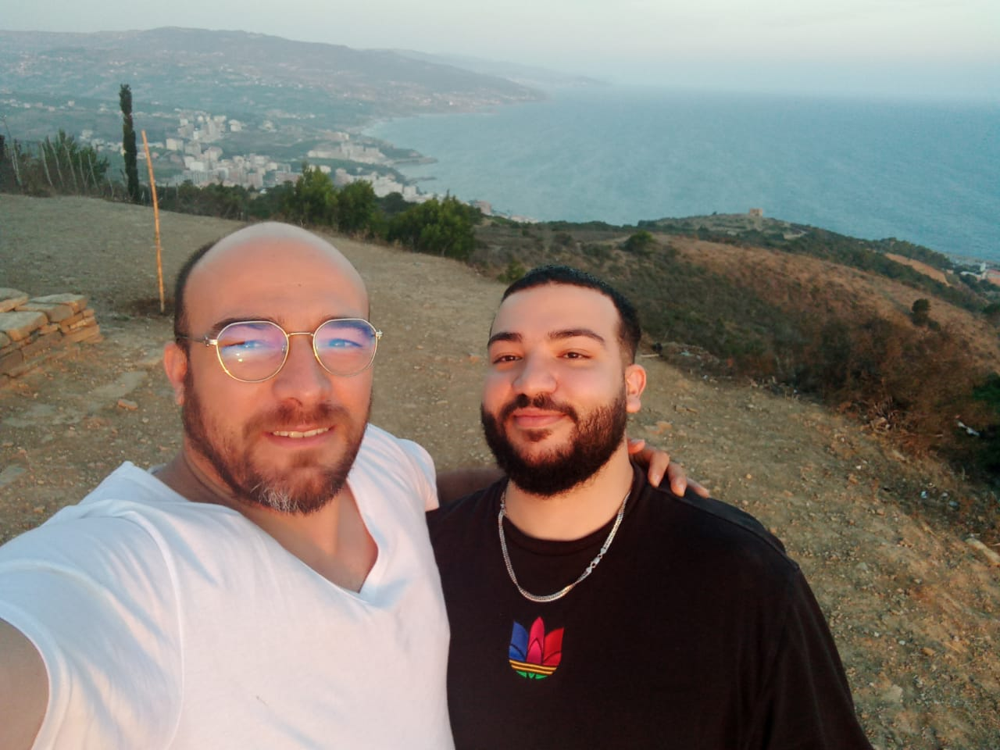
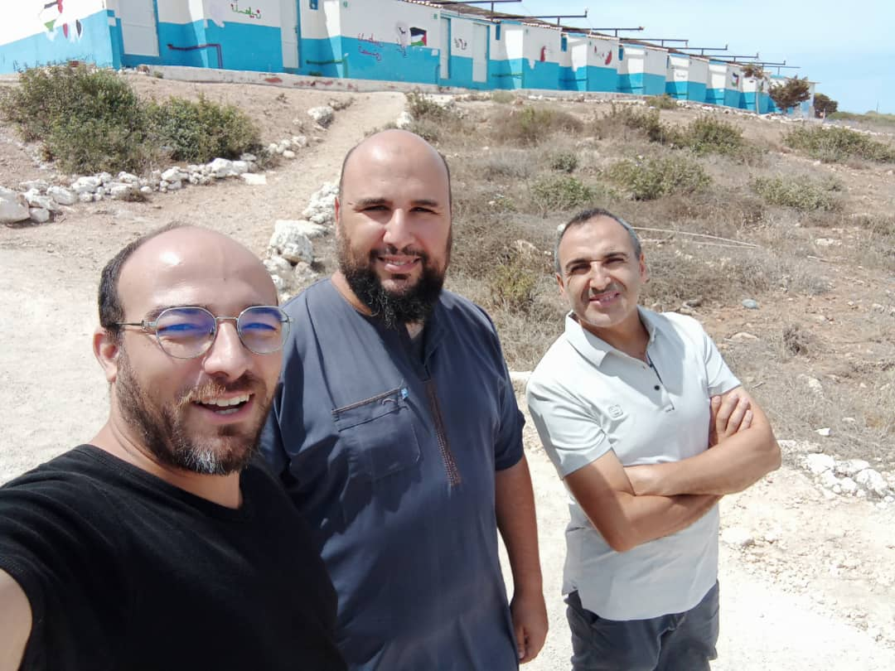

Septembre 2025
Lkhol3a lekbira : huissier de justice a appeler Safia pour lui dire que vous n'avez pas payé l'emprunt
J'ai tout préparer pour lancer le nouveau business: montage video, recherche d'idée gagnante, recherche de partenariat, achat crédit redotpay, ouverture reseau et alimentation avec publications ...etc.
Rehcerche de produits gagnant pour ecommerce et fournisseurs: GPS tracker iphone + android
Je suis devenu Coach en MMA
Coaching : il faut tout préparer pour le coaching perte de poids: payhip, facebook, videos, promotions, calendly
eCommerce : recherche de produit gagnant "tracker gps" belfort , oran, market place, alibaba ...etc.
je vais entamer la recherche d'emploie aprés la competition de Jui-Juitsu
Mouloud nabawi : allé a la zawiya hebriya de texeraine
Taches a realiser
+ Mouloud nabawi : allé a la zawiya hebriya de texeraine
+ 206 reparer frein arrière
+ controle technique 206
+ montage video promotion coaching sportif
+ montage video landing page pour vendre coaching et convaincre
+ achat crédit redotpat pour sponsoring
+ conception de landing page efficace
+ apeler ami ramdhane pour peindre le balcon et achter la citerne
01-09-2025 :
projet personel.
30-09-2025 :
La mauvaise nouvelle d'aujourd'hui c'est qu'on ne vas pas etre payé ce mois-ci aussi. a moins que Noredine yesmah fe salaire ta3ou w ykhalasna bih comme le mois passé.
Le probleme c'est que j'ai déja acheter du credit redotpay depuis mes economies. il me reste que 15000 pour ce mois-ci. rabi yeltof nshalah. sinon je reprendrais heetch.
projet personel: j'ai terminer hiere le montage des 3 video a sponsorisé, j'ai aussi acheter du crédit redotpay pour le sponsoring et j'ai terminé d'editer la landing page. il me reste que trouver une alternative a calendly et le tour est joué.
je pourez lancer le sponsor le temps que je veux, et je compte le faire dais la fin de cette semaine inshalah. on vas voir ce que sa va donner.
25-09-2025 : premier ajout avec smartphone
Aujourd'hui je me sens un peux fatigué et dégouté, il faut que je me prépare pour le sponsoring du coaching, ça va etre un grand jours je pense.
j'ai contacté la personne pour acheter du crédit redotpay, j'ai contacter ami ramdhane aussi pour peindre le balcon. il faut aussi que j'achete une citerne
projet personel: j'ai terminé le montage de la video de landingpage et je l'ai mis sur youtube afin de l'ajouter a la page de vente, il faut acheter redotpay pour sponsoriser la page dès la semaine prochaine inshalah.
23-09-2025 :
Aujourd'hui noredine est venu, j'attendais une réaction négative de sa part, puisqu'il a chargé MEB de m'envoyer un mail concernant le travail et le manqie d'implication dans les projets.
tout c'est bien passé. je ne comprends pas se qui se passe mais j'attends darba de sa part dans pas longtemps. et je ne serais pas la biensur.
projet personel: hiere j'ai terminé le montage de la video de la landing page pour coach, il manque une petite music de fonds et je la publie dans la page, il faut que j'achete du redotpay cette semaine pour lancer le sponsoring.
Entre temps j'ai contacter plusieurs fournisseurs de airtag tracker gps et je suis meme allé a belfort, pour lancer aussi le ecommerce pour un complement de revenu. mais je pense que le projet de coaching est plus prioritaire avec l'emmigration biensur.
21-09-2025 :
AUjourd'hui c'est la rentrée scolaire, j'ai ressentie un peux de nostalgie en passant par une ecole primaire ici a les sources. les parents été contents.
il faut que je reprends le sport MMA a reghaia, ce weekend tous les réves que j'ai fait cencernaient le sport: shadow boxing, combat , wresling ....
projet personel: j'ai travaillé le weekend sur la video de la landing page et j'ai ressentie une satisfaction personel malgré que j'ai eu du mal a faire tourner la video et
je procrastainais. mais sa va, je pense pouvoir terminer toutes les taches d'ici fin de semaine afin de lancer la publicité inshalah.
18-09-2025 :
Hiére j'ai fait la 1ere présentation de Capthen avec le client Tunisien, je suis satisfait de mon travail et de ma présentation. j'ai eu courage et j'ai parlé fluidement.
meme quand a certain moments je cherchais les mots, je les trouvé rapidement. meme le client est satisfait de notre travail apart quelques remarques.
j'ai passé toute la semaine malade: 1- la diarrhée avec des douleurs dans le ventre 2- Grippe avec fievre 3- conjonctivite: oeil rouge avec nmech et des larmes
projet personel: de temps a autres plusieurs idées me viennet a l'esprit et notament le ecommerce, je vois des oportunités chaque jours wel hamas yzid. mais puisque j'ai dessider
de faire la formation sur le coaching je pense continuer dessus, maintenant je suis dans la phase presque final de création de tout le contenu afin de lancer les compagnes publicitaire.
mais je vois une oportunité de lancer sur la plateformes tiktok c'est mieu que meta. mais il faut acheter un compte tiktok agency.
pour ne pas oublier le jeudi et mercredi passé j'avais le vertige a cause de la tension arteriel: 12/9 que j'ai fait la mesure dans le polyclinique de les sources, le soir du jeudi
la fievre a commancer et la grippe et le dimanche la conjonctivite.
11-09-2025 : Ausse de la tension artériel: 13/9 puis 11/8 après 20 min
Sa fait 2 jours que je sens le vertige, je me suis dit que d'ici ce soir ça va aller, puis je dors quand je me reveil ça va allez, puis.....
mais aujourd'hui quand j'alais boire du raib dans le refrégirateur de systhen je me suis dit que c'est petetre lui qui ma fait cela, puisque cette semaine depuis le dimanche jusqu'au marcredi
j'ai bu toute la bouteil du raib. un vers le matin et un vers le soir. je fait le jeune intermittant, et j'ai commancer le sport le dimanche au Sablette. En plus je croix que le probleme de l'huissier de justice de la semaine passé
ma boulversé un peux. voici le symptomes et en plus j'ai des larmes dans mon oeil droite !!! nchalah khir.
projet personel.
09-09-2025 : focus sur Capthen pour cdn tunisie, puique Norredine ma parlé avec mepris la derniere fois et j'ai pas aimé du tout ce geste
Malheureusement, je n'est pas fait le recours de l'AADL cette fois-ci a cause du salaire, j'avais entete de trafiquer la fiche de paie de ghazala mais j'en ai assez. rabi y3awad ma khir nchalah.
projet personel: je suis entrain de voire comment font les concurents et notament Flashfithome avec leurs chalenge de 5 jours avec la plateforme skull.
04-09-2025 : Amortissement du choc de l'emprunt cheraga et de l'huissier qui a appeler safia
Hière je suis allé voir, celle qui a appeler Safia pour l'emprunt, c'etais soufi electro en face tétanique lycée rouiba. en fin de compte c'etais une fausse alérte. puisque le numéro qui prétendais étre le huissier de justice c'etais la commercial qui du bureau.
et apres avoir discuté avec elle, aparement elle les conné ceux de cheraga, et ils leurs apportent des clients.
Je suis allé au commisariat pour déposé plainte, et comme je prévoyais l'officier les conné et il prétend soit disant que c'est un tebessi kavi.
j'ai aussi passé cette semaine a courir après le controle technique de la 206 et le mécanicien chaque jour j'alais a Kaidi et il refusé de la passé et je reviens vers le mecanicien et rebolote jusqu'a je suis allé a haraga il me la fait passé dificilement.
projet personel: je n'est pas les moyens pour lancer la compagne puisque la 206 ma couté très chere a cause du controle technique.
Aout 2025
Camping dellys famille + Rahma
Lancement Business Cross-Roads: je croix que je vais tenter de lancer un coaching mainceur et self-defence
je vais entamer la recherche d'emploie aprés la competition de Jui-Juitsu
j'ai mis le ecommerce de coté en attandant ce qui est plus prioritaire
je pense commancer un business pour le coaching sportif et perte de poids
Taches a realiser
+ Moi : achat materiel montage video: trépied + boucle lumineuse
+ Moi : camping rahma
+ Moi : reprise sport + régime afin de tourner de bonnes videos et paretre en forme
+ maison : réparation robinet et chasse d'eau
+ 206 : lavage interieur et exterieur
+ 206 : controle technique
+ 206 : réparation essieu arriere
+ 206 : réparation frain arriere
01-08-2025 :
Aujourd'hui j'ai .
projet personel.
31-08-2025 :
Aujourd'hui dernier jour de Aout: j'ai emmener la 206 chez le mécanicien, rah test9amli berdida puisque rah y3awedli kolech. à cause ducontrole technique de
Jeudi a Kaidi, qui a trouvé que l'arriere ne fraine pas.
Ce week-end je suis allé avec Youcef Dadach au camping de rahma. a sidi abderahmen a tenes chez société ikhlas c'etais vraiment agréable. on a passé un bon temps
et les éleves ont été bien sélectionnés.
projet personel: pour l'émigration je l'ai gelé pour ce mois et le mois de septembre en attendant de voir le résultat du coaching.
donc je suis entrain de créer une formation pour faire maincir les femmes en surpoids qui ont récement accouchés.
pour le moment le j'ai créer : * le store avec les produits de Herbalife * la page facebook avec les créatifs necessaire * du contenu video avec l'IA
* tournage de la video de promotion + 2 video de promotion avec l'IA
* maintenant il ne reste que le montage et la promotion rur les reseaux sociaux
et voir le résultat de cette compagne ensuite scaler jusqu'a avoir 10 réservations sur mon calendrier.
13-08-2025 :
Aujourd'hui j'ai reçu l'appel de allaa la commerciale de abdou boutaleb ecommerce et je lui ai dit que je compte reporté la commande pour le mois prochain puisq mon budjet ne me permet pas.
donc je me suis libéré de la pression du ecommerce, maintenant je saute a la formation et au coaching, j'ai réservé un call avec https://shakhatreh.com qui paret compétent.
je vais voire en quoi il pouras m'aider. et j'ai découvert un autre youtuber qui propose comment construire un business avec le coaching sportif.
j'ai aussi reçu le colis pour le montage video mais malheureusement il n'est pas conforme a ma demande. normalement ils vont me rembourser.
projet personel: coaching sportif et perte de poids pour le moment. le projet de l'emigration je vais le reprendre tres bientot.
11-08-2025 : New business choice Cross-Road et j'ai eu une super motivation ces jours-ci pour le ecommerce
Aujourd'hui je me retrouve sur la crossroads de mon chemin vers l'entreprenariat, j'ai fait un call avec l'equipe de Abdou ecommerce et je me retrouve a choisir entre:
- 1- Lancer de nouveau un ecommerce local ( Abdou ecommerce )
- 2- Lancer un nouveau ecommerce dans les pays du golf avec la plateforme TADJIR
- 2- Lancer une formation enligne pour maigrir et MMA (Stan)
- 3- Créer une agence SMMA pour siteweb et ads au pays francophone (Heinly)
- 4- emigration au Canada et emploi avec chakib
- 5- emigration deutschland avec chancencarte et l'aide de midou
- 6- Recherche emploi en france
- et tous ceci il doit cracher sur: trouver un contrat en freelance et avoir une résidence en europe et acheter des biens laba pour un revenu passif
projet personel: je croie que je vais seder au ecommerce puisque sa ne vas pas vraiment me faire avancer dans mon objectif au contraire ça va me boufer beaucoup de temps.
pour le moment le choix qui me parait logique est celui de la formation maigrire avec un coaching (moins de risque avec la methode du lancement inversé).
07-08-2025 :
Aujourd'hui j'ai dormis chez nsibi pour et j'ai emmener ghazala a la formation prothèse dentaire a bouchaoui.
La semaine passé on est allé faire camping a Dellys avec lilya et warda, ma mere et lola sont venu nous rejoindre pour 2 jours.
Kamil et manou sont venu pour une journée. Tout le monde été content saufe que hiere je decouvre qu'ils ont organisé une sortie pour dinner et on été pas invités.
donc conclusion : ils profitent gratuitement de nous mais ils ne nous invitent pas pour la leurs
projet personel: j'ai rdv aujourd'hui avec l'equipe de abdou boutaleb pour construire un nouveau projet de ecommerce. on vas voire ques-ce-que ça va donner



Juillet 2025
Je sens que j'ai une grande confience en moi, et aussi que ma valeur perçue a augmenté (grace au videos de psycolab). j'ai remis tous le monde a sa place puisque la soeur de hayat ma manqué de respect et je l'ai intimider et remis a sa place
Pour avoir un sense a sa vie il faut etre toujours en recherche continue a un sense de vie, avoir toujours des chalenges, avoir toujours des objectifs , tomohates, une vision a longterme il ne faut surtout pas s'areter et dire qu'on a atteint le niveau espéré
Je suis devenu Coach en MMA et je cherche a exercer a rouiba
J'ai lancé un nouveau projet pour Safia: le nouveau cabinet dentaire avec la charaka de Halim.
choisir prestataire pour contrat de travail europe
Ouvrir nouveau cabinet dentaire pour safia avec le partenaire Halim a Bordj-mnail ou Si mustapha
Recherche de projet de freelance: developpement ou traduction.
Arnaque: détection de 2 arnaque une en freelance et l'autre pour le Canada.
Taches a realiser
+ maison :robinet toilette
+ maison :cameras de surveillance
+ balcon cuisine contre rats
+ maison :robinet cuisine
+ Anniverssaire Yasser
+ 206
+
01-07-2025 :
projet personel.
24-07-2025 : 2 Arnaque détection
demande de ( Baridi mob au lieu de Paypal ) : La vérité est enfin aparue, c'est une arnaque comme je le considéré. j'avais fait tous le travail de traduction j'ai meme engagé ghazala avec moi.
j'ai fait la conversion en text de 60 images et puis j'ai fait la traduction pendant 5 jours de travail est partie comme ça.
les africains c sa, j'ai decouvert que le contact a été depuis le nigeria mais le numero de telephone été tailandais : +66 63 804 5682 sur whatsapp il s'appel : UNIPILLARGLOBAL BANK
et soit disant qu'il travaillent pour le compte de "telus international" le logo dans le document qu'ils m'ont envoyer été de qualité médiaukre (un autre indice) leurs adresse email est telusinternational990@gmail.com (pas professionnel)
demande de paiement pour visa de travail canada, il paressent professionels mais quand j'appel par teephone ils ne repondent pas, ensuit il me fait passé soit disant son collegue pour qu'il me regle le problemes
et puis quand ils ont compris que j'ai detecté l'arnaque ils me dit de lui parler gentillement et je le bloque.
projet personel: je trouve que je n'ai pas une autre issue que de reprendre l'allemand et continuer a apprendre react pour un poste a l'etranger sinon je peux demander a chakib pour avoir un post de travail avec lui.
21-07-2025 :
Le jeudi passé j'ai decouvert une piste pour faire du freelance, avec le numero +66 63 804 5682 avec l'entreprise UNIPILLARGLOBAL BANK, mais quand j'ai fait des recherches sur internet ils disent attention il ne sont pas fiables.
ils m'ont demandé de traduire des documents pour (60 pages) pour 3500 $ je trouve que c'est trop bon pour etre vrai.
Aujourd'hui ram djayini el-ahlam, rani netkhayal rouhi fritha w cherit des apartements en europe w 3andi un revenu passif, ... rbatha comme suite : ma tedhakch 3liya bark:
nechri nouveau pc apres ndir demande de visa w nroh portugal je paye 5000$ pour residence et je reviens avec une nouvelle voiture w kol ma nlayem 150 000$ netla3 nechri un bien immobilier w nekrih ... ehlom ehlom yawwww.
projet personel: puisque j'ai trouvé un trvail en freelance je suis avec lui jusq'aa ce que je devoile la verité si c'est bien quelque chose de consistant ou c'est une arnaque.
15-07-2025 : Aujourdh'ui j'ai appris que l'homme est toujours en quete de reconaissance et de sence de vie et cette quete ne doit pas s'areter sinon il vas mourir
Aujourd'hui je me sens pas bien dans ma peau, je suis triste et fatigué d'une part parceque je n'est pas bien dormis (1h30 du mat) et d'autre part sprint mit video.
Le soir je vais aller au camping de hadjret ennos et emmener yasser et ghazala laba. je ne sais pas si je vais passer la nuit ou non.
Malheureusement, hiere j'ai fait Sprint mit video, j'avais des mauvais souvenirs de l'enfance avec El-Hachemi qui sont aparu. je pense qu'il a une main dans ce idman.
je pense que moi j'ai été naif et niya fi had swalah w houwa dakhalni w 3alamni hed chi, c'est pour sa drabtou bel ho9d.
Vu mon éducation, je ne conaissais rien dans ce domaine mais lui avec la mauvaise fréquentation il été bien avancé.
projet personel: Emmigration, j'hesite encore pour payer mnouar pour le contrat de travail UK
10-07-2025 :
Hiere j'ai pris ma revenche contre NOUNOU dans le Jui-jutsu, et je me sens satisfait du progrés que j'ai fait pendant 2 ans dans ce sport,
Car il ya 2 ans quand j'ai fait ma premiere séance d'entrainement avec NOUNOU mermed biya lard, tapani men koul djiha. w silem biya hata darli fly arm bare wana netfaradj.
hassit rouhi jamais dert sport fi hyati puisque kan khfif bzf w expérimenté surtout fe sol w mem fi la lutte.
Mais lbarah tapitou 3 fois, w lawla tapani houwa le premier ghlat, lha9 au point win 9ali n3awdouha. mohim je suis fiere de ce progrès hamdouleh.
Un point negatif: 3awedt dert sprint mit video le lundi w fel khadma malheureusement, bien que le dimanche kont sayem fi 3achoura.
Sinon j'ai emener yasser a la plage avec raouf et ghazala, et j'ai faillis me bagarer avec l'agent le metre nageur de la protection civil, puisque pendant mon abscence il a installer ces piquetdevant yasser et a la limite de mon parasol.
projet personel: j'ai postuler a plusieurs offres d'emploie,et j'ai cherché sur internet les contrats de travail et j'ai choisis un il ne manque que de le payer(s'il est de confiance):
Une chose au fond de moi me dit qu'il parle sincerement et il ne ment pas et une autre chose dans la video que j'ai vu me dit qu'il ment( puisqu'il regarde en haut a sa droite d'apres la pnl il est entrain de créer un scenario)
30-04-2025 :
Aujourd'huije vais faire un stage de coach spotif special MMA a tiaret, le matin je suis venu avec youcef seloum, et le soir je vais a la garre routiere.
maintenant a midi je vais payer les frais d'inscription a la banque.
hiere ghazala ma fait une tete et mchenfa 3liya, le meme comportement que l'aid, je suis déssus mais je m'en fiche completement, j'ai mes objectifs et rien ne peux m'areter a les atteindre.
projet personel: je suis avec la révision du CSS avec les videos de grafic art. d'ici fin mai je doit etre pret pour postuler aux offres d'emploie en suisse inshalah.
24-04-2025 :
effectivement mo corp à été choqué par l'intensité de l'effort physique que je pratiquais chaque jours au point ou je suis tombé malade le lundi 21/04 et je suis resté cloué au lit toute la journée
maintenant cava je commance a reprendre au point ou je me suis entrainer hiere avec 5 sparing sans étre fatigué, maintenant c'est moi qui est choque par cette performance machaa allah.
la date de la compétition à été fixé pour le 16 mai prochain donc il me reste 3 semaines de travail. je vais faire de mon mieu inshalah.
projet personel: je me suis déssider dais aujourd'hui je ferais 1 heure de frontend par jour appart les heures de travail, pour monter en compétences le plus rapidement possible puisque le deadline est prevu pour juin inshalah.
20-04-2025 :
Mon corps est choqué avec cette intensité de sport car il est passé de 1 entrainement par semaine à s'entrainer chaque jours avec des séances de muscu et cardio intense.
La chose la plus extraordinaire c'est que je commance a prendre confiance en moi, puisque je me fatigue plus comme avant dans les sparings, j'arrive a tenir 3 sparings d'affilé c'est geniale.
mon objectif donc est de tenir jusqu'a 5 eme ou le 6eme sans difficultés
hiere j'ai fait plusieurs sparings a la salle et j'ai fait sortir avec moi Abdou MMA a fort de l'eau le soir. le week-end à été un calme je me suis reposé un paux et j'ai fait remplir a bainoire pour relacher
mais je croix que j'ai attraper une grippe malheureusement.
projet personel: j'ai visualiser une video qui ma remis les points sur les i, puisque dans la video il explique qu'il faut garder ton objectif loin terme toujours dans ton champs de vision, sinon tu vas etre submergé
a résoudre des taches/problemes quotidien infinis et tu n'arriveras jamais a ton objectif. voici la video : https://www.youtube.com/watch?v=4GNUp3NnGK4
17-04-2025 :
Hiere tla9it be sam danone, sobhan allah kan mnewar w than yechebah le rasoul kima cheftou fel mnam
aujourdh'ui je me suis levé tot le matin et je suis allé a la salle de sport faire de l'explosivité 1h20 avec 10min de cardio a la fin
je compte aussi déposé le docier de condidature pour le poste chez le ministere des finances, allé a la banque pour sortir le relevé, allé a la mairie pour déposer les papiers.
pour enfin deposé le dossier AADL et en finir pour de bons aujourd'hui.
16-04-2025 :
Toujours avec la préparation physique pour la compétition, hiére c'etais la journée de repos mais aujourd'hui nchalah je vais reprendre pour 5 jours d'affiler sans repos
je me suis lever difficilement le matin et je me sens un peux fatigué a cause du manqe de someil, donc il faut que je dorme avant 23h chaque jours, pour bien récupérer
projet personel: j'avance dans la pratique de Vue Js grace à Capthen, ces jours-ci je suis entrain de créer de nouveaux composants au lieu du html/css.
Mais ma priorité pour ce mois-ci c'est la compétition Jui-juitsu. aprés rah net9a3ed le developpement mlih w nmetrisih bien avant fin Mai. après je vais postuler pour la suisse et
ça seras ma priorité numéro un et rien d'autre.
14-04-2025 : Yawm Ostouri
Hiere ya3ni (13/04/2025 mo9abil 14 chawal 1446 hidjri ) nomt rasoul sala allah alaihi wa salam ==> cho3or la yousaf, ma fhamtch ga3 wach srali. nhar complet wana nebki ma 3labalich 3lah. w lakhra zet tartagt bel bka 9odam safia be chah9a fe lil
balak mel ferha, balak pasque j'avais perdu espoir w had lemnam 3awed hya fiya chou3our bel intima2
balak vue la période difficile li djawazt ma9bel had lemnam kan comme un remede, balak had lemnam kan liya djaza2 par rapport lel ibtila2 li djoztou w je l'ai réussis
Hiere nomt rasoul sala allah alaihi wa salam ==> cho3or la yousaf, ma fhamtch ga3 wach srali. nhar complet wana nebki ma 3labalich 3lah.
Voici wach nomt : kont fi madjlis ta3 wouzara2 netchawrou apres djana un visiocall, ikhtibar foudja2i bach ychoufou ida had ness ta3 dine wela lala.
omba3d sa9sawna chkon ya3ref ydjewed 9or2an wana lawal li sa9sawah 9otelhom oui, apres atawni mashaf w sobhan allah la page li ftahtha kanet ayat lkorsi li kont deja 9ritha 9bal ma ner9od.
ki 9rit isti3ada (kont mkesel w kichghol yasser kan fo9 sedri ) w hassit nefs mahch yekfini mala hatitou w bdit ne9ra. omba3d ayates li mor ayat lkorsi bdat tetlefli puisque ma3reftch win kont.
w than kan fi bali beli wla 9alouna ma chefitch mohim kichghol ra2is w rasoul sala allah alaihi wa salam kanou yesem3ou fina balak c pour sa panikit.
après kichghol kona fi plassa techebah les romains fel castor w moraha djebel 9asfouh lihoud w hadak trab kichghol rdem kamel ness li kanou thema. omba3d ki khredjna nselkou kichghol selkou ness kamel
w thema 9otelhom hawlik abou bakr ki cheftou kont netwe9a3 dayer 3mama bida bsh houwa kan rasou machi mghati w kan 9sir w chuiya smine.
mohim omba3d hawest 3la fikra bach nroh nahder m3a rasoul ( w 9olt neproposilou nsalou rak3a bach nahamdou rabi ki slekna).
ki hawast 3lih kichghol sofof kanou en forme de caré w fel wast fragh omba3d ki roht mel djiha ta3 nord ( en face batima twila) kanet wahed l caria fiha wahed 4*2 bnadem w sama étoné ki kanou labsine le noir kichghol kima chi3a
w fi wasthom kan raoul sala allah alaihi wa salam. ki roht lih kan labess vista bleu sombre (bleu roi couleur kima stepway ta3 amou abderahmen) hadja lawla li dertha 3ana9tou w bkit
w 9otlou "ya rasoul allah walahi ini ouhibouka fi lah" w bkit bkit bkit, w houwa kan mobtassim w wa9il 9ali ahabaka ladi ahbabtani fih. kan chuiya twil 3liya presk kima amou boualem fe toul
w lahya ta3ou kahla mi9dar 9abdaw kathifa chuiya presk kima ta3 sam danone wela chikh fares bouyahiaoui w fi lewdjah yechebah le soltan abdelhamid ta3 3othmaniyine bark cha3rou kehal .
omba3d ki 9ali wach tesha9. 9otlou ini ara law nousali rak3atayn nahmadou allah azawadjal ki nedjina. 3adjbou lhal w wa9il 9ali ni3ma ra2y. omba3d 9ali fal tousali bina 3ala tari9a chafi3iya.
roht leplassa bach nsali bihom, w kont n9ol fi rassi kifach 3raf beli yegzizti lmadhab chafi3iw houwa dja morah ? omba3d nodt nebki kima fel mnam kont 3la djenbi liman m9abel l9abla w kan hadak win adhan lefdjer.
bsh reveil kan mazalou 40min bach ysoni bahc nroh nakhdem, mala 9olt fi rassi nemt rasoul w ma nodch lefdjer. w tmenit thani lokan zedt chuiya 9a3ed ne3sor fi rohi kechma nzid d9i9a wla 2 omba3d nodt.
w ndemt ki ma sa9sitouch 3la lfir9a nadjiya w kont hab nsa9sih thani 3la salafiya ;-(
projet personel: pour le moment je me consacre pour la compétition qui aura lieu le 2 mai prochain. avec au programme de la musculation et de l'explosivité.
apres cela je retourne vers le projet personnel (postuler pour des offres en suisse) pour sortir d'ici le plustot possible.
08-04-2025 :
Aujourdh'ui la réunion avec Norredine s'est bien passé (il m'avais dit je te donne un mois sinon... , puisqu'elle lui a fait croire que je ne travaillais pas assé) , j'ai prouvé
mon experience et aussi j'ai fait tout le necessaire: limb tizi, capthen gestion de lot, respect des delais. je ne lui ai laissé aucun point a critiquer (irreprochable wal hamdouleh)
mais en fin de compte je me suis épuissé, et j'ai raté le ramadhan de cette année malheureusement. je travaillais comme un dingue jusqu'au ftour tous les jours
cette semaine je me suis bien décomprésé: avec le Cardio, jui-jutsu et le 1er entrainement a la salle de musculation
video pre-suasion.
05-04-2025 :
Aujourd'hui je me sens alaise, repose et epanouie car j'ai effectuer plusieurs realisations :
j'ai enfin reparer la 206 depuis le controle technique de aout je procrastinais (frein arriere, roulememt, chaine distribution, courroie alternateur)
Seance de Cardio : le carree avec 2 HIIT de 6 min avec 30s/30s
video pre-suasion.
01-04-2025 :
Aujourd'hui commance une nouvelle aire, la ou je me suis sentis debarasse de l'enfermement que je me suis fais impose depuis mon mariage, puisque
apres les realites annoncais par bouchera tout devenait claire pour moi, j'ai enfin tous compris ou presque kima y9oulou ida 3orifa sabab batoula l3adjab
aujourdh'ui aid el adha, je ne suis pas partie faire la priere a cause de sprint fel mnam. Ghazala me fesais une tete et ne ma pas dit
saha aidek hata ki welina men darna c-a-d mor 3 heures ghir 3lq djal babaha kan djay ykabal 3liha.
l'etat de sante de Manou ma rahich ta3djeb et sa se voit
j'ai sentis une froideur depuis 3amtou et Imane et meme roumaissa ray chedet saf thani
projet personel.
MARS 2025
Enfin du mois de Mars je me suis enfin sentie sortie de la depression que je subissais depuis mon mariage 2021
le livre que j'avais lu été tres benefique pour moi car j'ai enfin compris la ou sa clochait avec mon enfance et puis j'ai aussi
compris quesqui ne valais pas avec la famille grace a bouchera, je me sens soulager maintenant puisque avant je ne comprenais relations
et surtout je ne comprenais pas pourquoi ils reagissaient de cette maniere au point ou la DJ Women se trompais sur notre nom HERMEZ et personne
ne lui as corriger
26-03-2025 :
aujourd'hui j'ai repris le jui-jutsu et j'ai aussi repris confiance en moi puisaue j'ai trouve les seances de condition physique et musculation ont etre
tres benefique, je me suis pqs du tout fatigue bien que j'ai des courbatures dans le bras mais cava sobhane allah 2 seances de cardio a sablette
ont fait toute cette difference, je compte aussi rajouter 2 autres seances de cardio la semaine prochaine.
Normalement la planification que j'ai etudier repose sur trois phases:
1- une phase de renforcement (3semaines: 16 mars => 6 Avril ) musculaire pour avoire de la force
2- une phase d'endurence (2 semaines: 7 Avril => 20 Avril) pour prendre un rithme et le garder a travers le temp
3- une phase d'explosivite (2 semaines: 21 Avril => 4 Mai) pour etre rapide et ne pas se fatiguer avec + de sparing
je continue a pratiquer vue Js mais aujourd'hui j'ai eu du mal puisque je metrise pas encore les fonctions asynchrone et les watchers.
donc je compte me perfectionner dessus.
24-03-2025 :
ces jours-ci je travail comme un dingue w ma lha9tch, enfin je croix que hadi c'est la norme. puisque dais à present je respecte les horaires
de travail sans distractions. hiere j'ai fais un peux de muscu comme prévu dans mon agenda de préparation de compétition, et aujourd'hui je vais
faire un peux de cardio à sablette comme le mercredi passé(il me faut au moins une séance de cardio par semaine).
pour le travail je suis toujours avec création et modification de lots il faut que je termine le CRUD cette semaine.
avec la série de videos de la chaine youtube "psycology Lab" je suis entrain de découvrir plains de choses sur la ghorba en Allemagne
en fin de compte ce n'est pas facile du tout, surtout que c'est un peuple froid et raciste.
16-03-2025 :
hiere je me suis déplacé a boumerdes avec Safia pour voir les locaux pour le cabinet dentaire. et le jeudi j'avais préparer un clash pour MEB
puisqu'elle a critiqué mon code front mais malheureusement je ne l'ai pas envoyé la derniere minute je ne sais pas pourqu'oi.
Aujourd'hui c'etais l'heure de la revenche mais sa c'est bien passé commeme.
pour le projet personnel il vaut mieux que je continue à avancer sur Vue JS.
06-03-2025 :
Hier j'ai enfin prix mon salaire et je pense que sa sera la derniere fois que je prendrais 10 M.
donc la prochaine étape seras de trouver un nouvel emploie en suissse ou Ausbildung vers un autre métier.
j'ai aussi acheter les legumes pour ramadan
je pense que après le dernier coup quand on ma volé les affaires de la 206, je suis rentré dans la zone de confort.
il faut que je sorte immediatement puisque deniya ma terhamch ni meme l'employeur
04-03-2025 :
Hier on a ramener mon pere depuis l'Aéroport, il est venu de la Omra, donc je ne suis pas partis au travail la journé. Le matin j'ai emmener Safia pour un entretiens a kouba la croix.
et elle à été accépté. ensuite on a attendu a l'aeroport de 13h jusqu'a 16h.Le soir on est allé acheter des gateaux pour les invités a reghaia et on a dinner ensemble avec mes parents
hiere j'ai repris le Pc de warda et j'ai repris le premier cours de VueJS.
Fevrier 2025
le mois de Fevrier est le mois .....
06-02-2025 :
pendant toute la semaine précédante yavais des mauvais souvenirs qui me honté l'esprit, et grace au livre de "abi ladhi akrah" j'ai compris qu'il falais que je
raconte ces souvenirs a une autre personne pour me soulager, et justement après avoir raconté l'histoire de babat sam danone avec mounir
et darb li ditou 3la djalhom, sa ma soulager w hassit rouhi w rassi khfaf chuiya.
Aujourdh'ui j'ai présque terminé le prototype de Limb Gallery de tizi ouzou. et je suis allé a bach djerah pour acheter un quamis a mon
père pour la Omrah.
aujourd'hui j'ai repris l'idée de l'entreprenariat après un arret pour repos: j'ai visualisé des videos de Heinly.
j'ai repris aussi Vue Js avec la formation de grafikart sur youtube.
donc j'ai dessider de me reposer pendant un mois et travailler sur moi méme, j'ai arrété la prospection, j'ai aussi arrété
de regarder les videos d'entreprenariat et de montage d'entreprises mais j'ai commeme revu quelques cours de vue js, yavais
des mauvais souvenirs d'enfance qui me hontés le cerveaux chaque 5 minutes. donc je commancais a lire le livre de: "abi ladhi akrah" jusqu' fin
Janvier j'ai lu presque 150 pages.
12-01-2025 :
ghazala khaltet fiya: je ne sais pas si c'est le Lundi 06 janvier ou le Mardi 07 janvier au cours du rapport yasser nous dérangé et mon père m'attendais pour l'emmener chez le ra9i pour prendre RDV à 20h00
donc je lui ai dit que ce n'est pas le bon moment pour le rapport, et je suis allé
Le mercredi quand j'ai rentré a la maison je lui ai demandé un bizou, elle ma dit ne m'approche pas et plus(pour plustard)
le jeudi j'ai terminé la semaine avec une avencé dans l'application, et la nuit on l'a passé avec manou car elle à fait une opération sur sa main
le vendredi je suis allé au fiancaille de Rahim, les gens sont simple mais ils ne m'ont pas plus beaucoup, car pour moi Rahim mérite mieux. la nuit on l'a passé avec manou aussi.
la samedi été normale: j'ai fait une formation de rédaction SEO pour Amendine en france pour son blog apreviolencesexuel.com, et après j'ai été confronté une nouvelle fois avec sprint mit video.
Aujourd'hui j'ai passé la journée avec sprint mit video malheureusement mais j'ai fait un long repos cette fois ci et le soir je suis partis emmener yasser, car ils ont passé la nuit chez Nassiba
projet personel.
08-01-2025 :
Hière et aujourd'hui je me léve en forme et ferhan pour le travail, petetre parceque j'avance bien dans l'apprentissage de Vue Js.
aujourd'hui j'ai avancé dans le projet capthen-CL avec l'ajout et la suppression de repertoire et la boutton d'affichage du menu déroulant.
je pense faire une séance de travail avec fatima l'agent marketing de PDF to work afin de l'initier à l'envoie de Cold mail et lui montrer la methode de travail.
Hiere j'ai visualisé des videos sur le copywriting et j'ai lu un peux le resumet du livre 48 lois de pouvoir.
hière aussi k'ai fait une séance de Kick-Boxing avec des take-down MMA, sa me plait beaucoup.